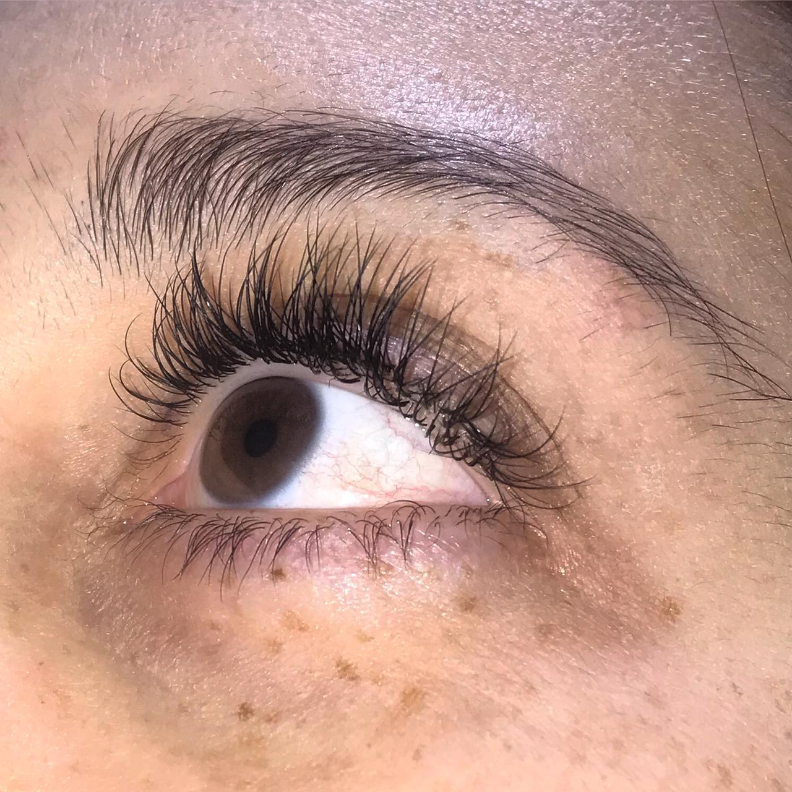
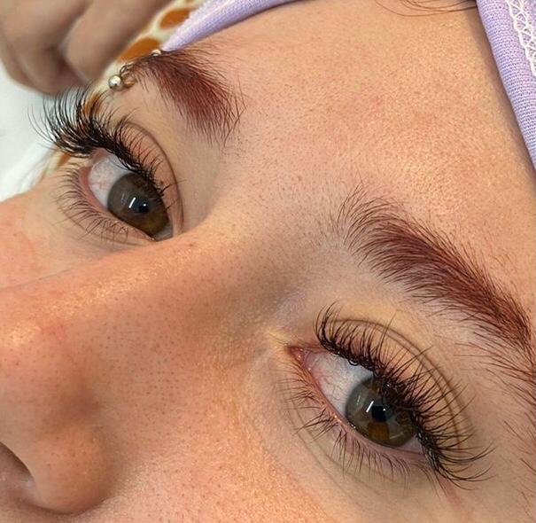

Te ofrecemos diferentes técnicas de colocado de extensiones para que elijas de qué forma querés resaltar tu mirada.
La técnica clásica consiste en colocar una extensión por cada pestaña natural.
 Técnica híbridaLa técnica híbrida se basa en dividir las pestañas naturales en tres capas, y colocar entre dos y tres extensiones en cada pestaña natural de la capa baja. En las capas alta y media se añade una sola extensión por cada pestaña natural.
